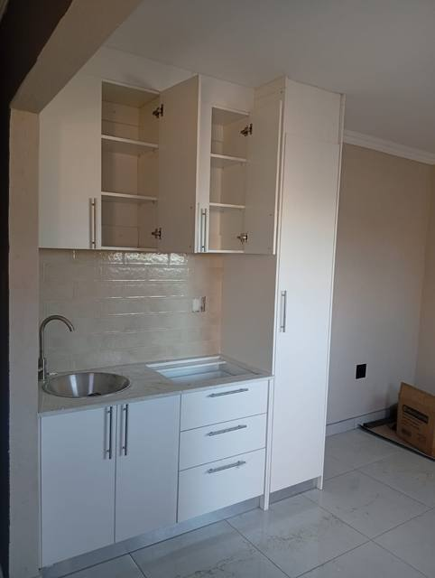

Renovation & woodworks in Century City
Century City is modern apartments and offices, where clever storage and clean, modern finishes matter most. We're often asked for apartment built-ins and wardrobes, compact kitchens, and office fit-outs.
Examples of our work
From our projects across Cape Town.



Working in Century City
Century City is a modern mixed-use area built around canals and Canal Walk, with apartment blocks, offices and hotels. Homes are mostly modern apartments, often compact, managed by property associations with rules on deliveries and working hours. Clever storage, sleek kitchens and home-office units are what people ask for most here.
Kitchens · Built-in cupboards · Doors & garage doors · Furniture · Decks · Renovations →
Questions from Century City
Can you add built-in storage to a Century City apartment?
Yes. Built-in wardrobes, TV units and shelving are common jobs, designed to make small spaces work harder.
Can you fit a home office in a Century City apartment?
Yes. A built-in desk with shelving and cupboards can fit into a corner or alcove.
Do you follow property association rules?
Yes. We plan deliveries, access and working hours around the building's rules.
Do you match existing apartment finishes?
Where the original finish is still available or a close match exists, yes. We bring samples to compare on site.